Research
- All
- Conference and Workshop
- Research Work
- Studio
- Podcast
TEMA (Trusted Extremely Precise Mapping and Prediction for Emergency Management)
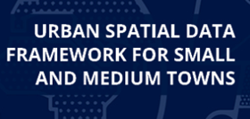
Urban Spatial Data Infrastructure for Small & Medium Towns
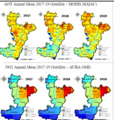
Web Based Application Using Open-Source Technology for Air Quality Assessment
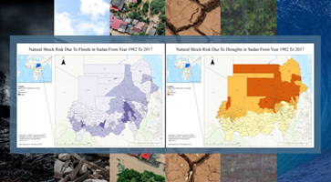
Case study for identifying the FAIRness of the Disaster Risk Reduction Data
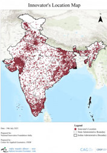
Mapping on Grassroot Innovation Database of NIF using Geospatial Technology
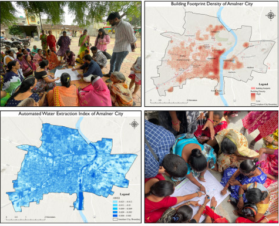
Developing a Geo-AI flood vulnerability assessment model for climate resilience for Amalner, Maharashtra which will serve as an archtype for fast urbanizing small towns in India
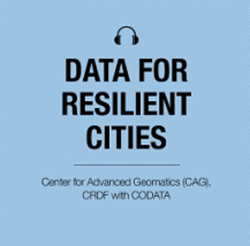
Data for Resilient Cities Podcast Series
Data knowledge action for Urban Systems Podcast Series
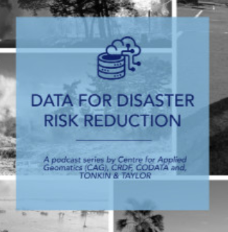
Data for Disaster Risk Reduction Podcast Series
Open Geo AI: Unveiling Satellite Insights through Open Data Podcast Series
Open Spatial Data Infrastructure for Sustainable Urban Development
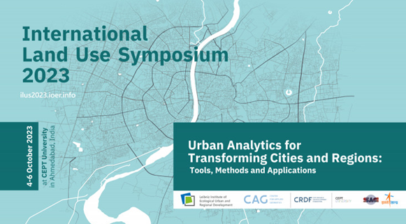
International Land Use Symposium (ILUS) 2023
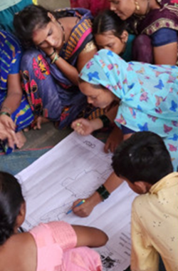
Community Mapping Expedition
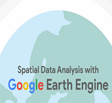
Spatial Data Analysis with Google Earth Engine
Development of Training Modules on Thermal Comfort in Affordable Housing
Knowledge Exchange Platform: SUKALP - Sustainable Urban Knowledge & Actionable Learning Platform
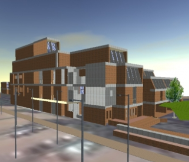
3D GIS and Visualization Studio Monsoon Semester 2016
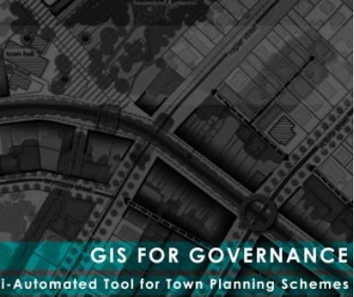
GIS for Governance Studio Spring Semester 2017
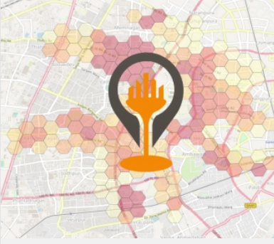
Geospatial Information Science and Geovisualization Studio Monsoon Semester 2017
Geographic Information Science-Foundation Studio Monsoon Semester 2018
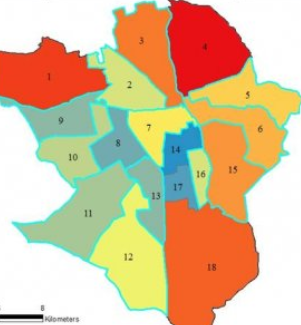
GIS for Governance Studio Spring Semester 2019
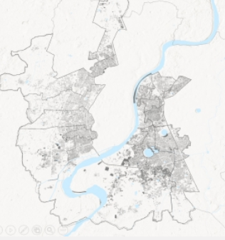
Geographic Information Science-Foundation Studio Monsoon Semester 2019
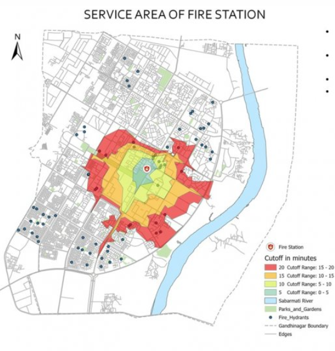
GIS for Governance Studio Spring Semester 2020 (Hybrid)
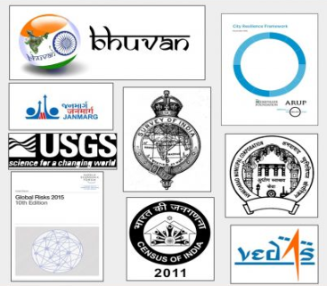
Geographic Information Science-Foundation Studio Monsoon Semester 2020 (Online)
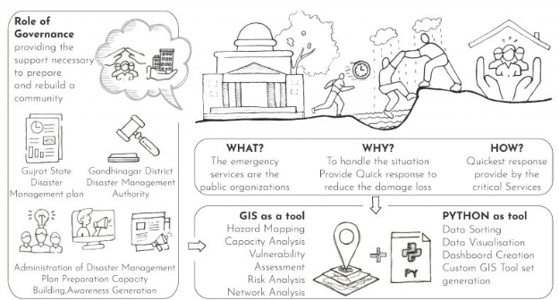
GIS for Governance Studio Spring Semester 2021 (Online)
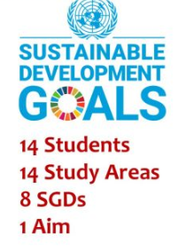
Geographic Information Science-Foundation Studio Monsoon Semester 2021 (Hybrid)
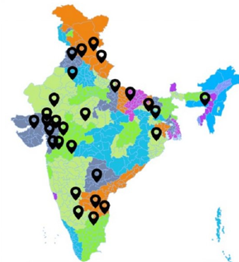
GIS for Smart Cities Studio Spring Semester 2022 (partial Online)
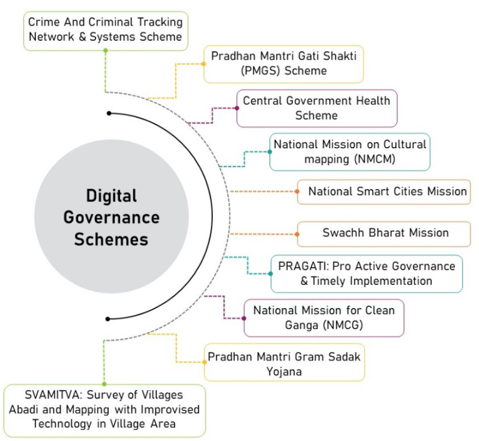
Geovisualization and Spatial Analysis Studio Monsoon Semester 2022
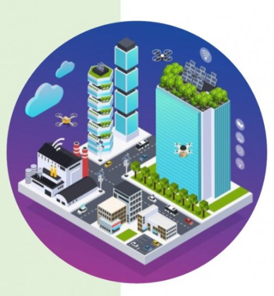
GIS for Smart Cities Studio Spring Semester 2023